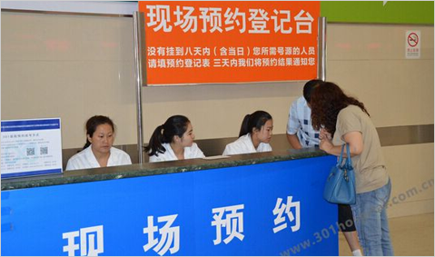

首页>产品中心>信息融合中心
首页>产品中心>信息融合中心

排队预约叫号系统
长沙网舜科技排队预约叫号系统适用于服务行业办事大厅，如政府、金融、医院、邮政、通信、工商、税务、保险、交通等多个领域单位的排队预约叫号，系统支持窗口预约、电话预约、网上预约、微信公众号预约、手机APP预约等，系统不但可以创造轻松的排队环境，给客户优质的服务，还可以提高服务部门的形象面貌，提高工作效率。
综合支付平台
为了方便用户接入后能更好的管理应用和交易信息，长沙网舜科技综合支付平台提供了应用中心帮助用户查询订单、绘制报表、配置支付通道及代理申请支付通道等。提供应用中心，平台支持支付宝、微信、百度钱包、Apple Pay等各个支付通道下的账户，管理各应用和各个支付通道的交易信息。
电子商城运维
电子商务平台是面向企业、个人建立在互联网上进行商务活动的交易平台，可以实现B2B、B2C和C2C三种应用模式。 长沙网舜科技有限公司有着多年的专业运维经验和运维团队。以业务数据和应用性能监控数据为基础，通过大数据采集、处理、分析、预测，把分析结果即时呈现在可视化大屏上，为各级运营和管理人员能够准确了解业务波动与IT系统的关联关系，从而作出准确的业务决策。